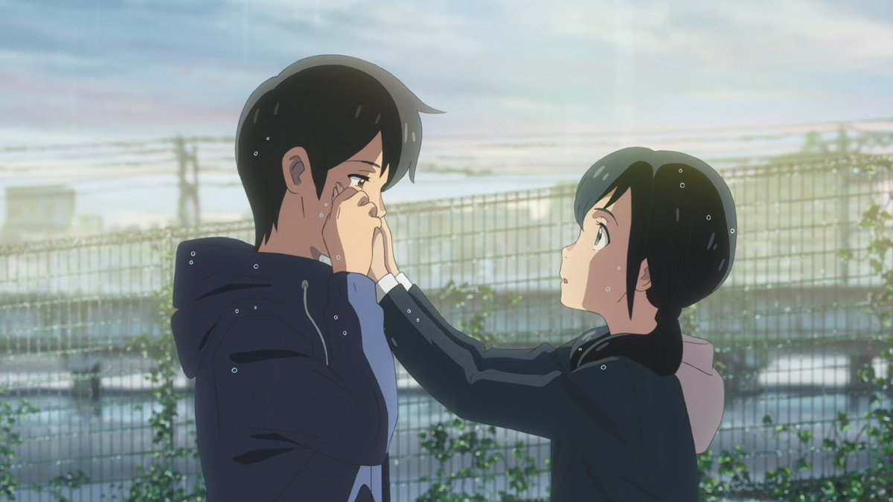

@CPUP2024 @hetongzhi114514 開篇那裡確實說的是狹隘了些
因為我後來發現這似乎是整個東亞文化的問題😁


因為我後來發現這似乎是整個東亞文化的問題😁

東亞社會所理解的「團結」本身就是個很畸形的概念：這種「團結」要求的是人人在社會與國家面前都應服從「大義」而犧牲自我。
而「天氣之子」中帆高做的選擇恰恰就是對這畸形「團結」的反抗：在「改變天氣」，與保護陽菜的自由與生命權中，他選擇了陽菜。(5/7) https://t.co/5j4vmjOWbJ
而「天氣之子」中帆高做的選擇恰恰就是對這畸形「團結」的反抗：在「改變天氣」，與保護陽菜的自由與生命權中，他選擇了陽菜。(5/7) https://t.co/5j4vmjOWbJ
@hetongzhi114514 天气之子的结局本就应该被争议和质疑，观众有权利质疑男主最终做法的合理性与正义性。
但虚拟二次元的事感觉也不需要我们上纲上线，就算这是一个“为了你哪怕世界崩溃”的故事也无妨。
原推拿一部老动画阴阳“老中”和“集体主义”才是让人迷惑，对结局的质疑可不是只有中国观众，但反正都怪老中得了～
但虚拟二次元的事感觉也不需要我们上纲上线，就算这是一个“为了你哪怕世界崩溃”的故事也无妨。
原推拿一部老动画阴阳“老中”和“集体主义”才是让人迷惑，对结局的质疑可不是只有中国观众，但反正都怪老中得了～